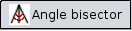

| << PREV | INDEX | NEXT >> |
This tool is an alternative to the Ruler. Like the Plane through 3 points tool, 'Angle bisector' requires the user to select 3 points in the Crease Pattern. It will then determine the plane that is perpendicular to the triangle spanned by the three points and bisects the angle at the second point.
If the selected points are on the same line, an error message will appear.
'Angle bisector' can be enabled by clicking the  button.
The Snap option works with this tool as well, but it will not display the small black squares seen on the 3D View.
| << PREV | INDEX | NEXT >> |